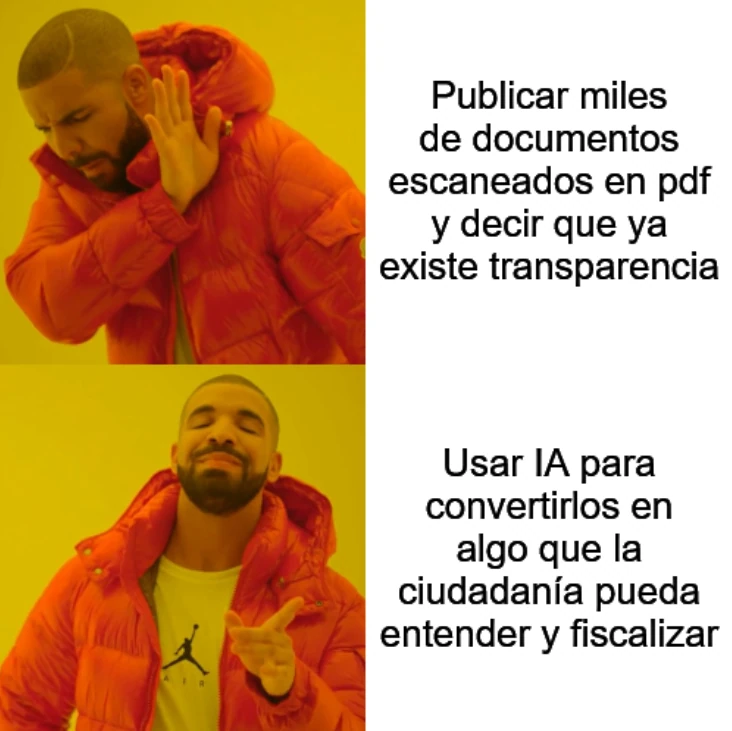

estrategIA #131 ·
Publicar documentos no basta
El contexto
La plantilla contrapone acumular archivos escaneados con facilitar su comprensión y fiscalización. El número exploraba el uso de IA y programación asistida para convertir documentación pública en herramientas de auditoría ciudadana.
Publicado en: estrategIA #131 — Vibecoding cívico con IA: cuando cualquier ciudadano puede auditar al Estado en un fin de semana
Leer el texto de la imagen
Publicar miles de documentos escaneados en pdf y decir que ya existe transparencia Usar IA para convertirlos en algo que la ciudadanía pueda entender y fiscalizar